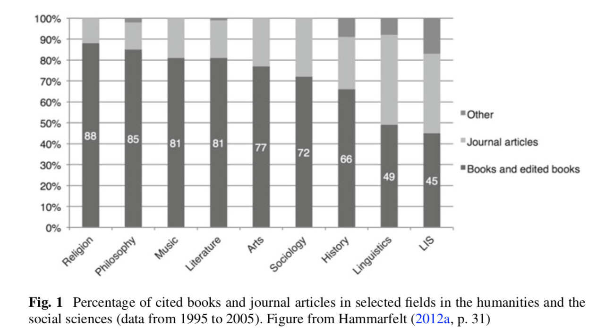

There are several organisations which define differently the disciplines to be considered Humanities oriented.
The lists of fields defined as the humanities differ between contexts and countries. The Organization for Economic Co-operation and Development (OECD) lists history, archaeology, genealogy, lit- erature, languages, philosophy, arts, history of arts, religion and theology (OECD 2002, p. 68) while The European Reference Index for the Humanities (ERIH) dis- tinguishes fifteen fields in the humanities (including educational research as well as gender studies and psychology). In the United States, however, the Humanities Resources Center includes eleven fields (Leydesdorff et al. 2011). [1]
However, a core of fields—that are on all ‘lists’—can be distilled: art, philosophy, music, lan- guage, literary studies and religious studies. [1]
In article [1], with "Björn Hammarfelt” as author (a researcher suggested by G.Colavizza also), there is a claim that “Linguistic” and “Philosophy" publications are more Journal-Oriented studies.
The humanities is a hetero- geneous collection of disciplines, and major differences exist between journal-based fields such as linguistics and more book-based fields such as literary studies and reli- gious studies.” [1]

Moed, is one of the main persons to suggest the fact that citation-based evaluations should be abandoned for SSH. Although this strategy has been ignored, and bibliometrics studies have approached SSH mainly in 3 different ways: (1) Ignoring the problem (2) Attempting to extend the corpus (3) Studying publications with the aim to better understand SSH publication practices. My thesis is very close to the third approach.
"For almost two decades, the necessity of treating SSH differently has been widely acknowledged by bibliometricians, particularly in the light of the diversity of publication types and languages, which is linked to the limited coverage of the SSH literature by the big citation databases (Frost 1979, Garfield 1980, Stern 1983). The suggestion to abandon citation-based evaluations altogether and to use alternative approaches (Moed et al. 2002) has been ignored. Instead, bibliometric studies have responded to these problems in three different ways: (1) Ignoring the problem … (2) Attempting to extend the corpus … (3) Studying publications with the aim to better understand SSH publication practices” [2]
Studies of publication practices and of practices of referencing the literature have employed three main approaches:
(1) Samples of publications indexed by databases or purpose-built corpora of SSH literature or references in SSH publications have been categorised according to properties of publications. These studies primarily identified types of publications or referenced materials, their age characteristics, the frequency at which they were used, and the languages in which they were published (Broadus 1971, Garfield 1980, Heinzkill 1980, Stern 1983, Ardanuy et al. 2009, Hammarfelt 2012, Sivertsen 2016). (2) The use of the literature by those citing it has been studied by citation context analyses, which categorised the importance of cited references for the citing text, the sentiment of the citing author, the distribution of citations across different sections of a publication or the functions of the cited literature in the citing publication (Frost 1979, Cozzens 1985, Hyland 1999). (3) Motivations for citing particular publications in specific ways have been explored by standardised surveys and interviews (Brooks 1985, Shadish et al. 1995, Harwood 2009). [2]
The main results obtained by the last researches made with the application of the three above strategies are listed here.
The studies applying these approaches revealed distinct properties of SSH publications (for overviews, see Hicks 1999, 2004, Nederhof 2006, Van Leeuwen 2006, 2013, Hammarfelt 2016). Their main results were that SSH (1) use a variety of publication types, with book publications being the most frequently used type; (2) often address nationally or regionally specific topics; (3) publish in national languages; (4) include primary sources in their reference lists; (5) use older references than the sciences, which is only partly due to the referencing of primary sources; (6) and are covered by the major citation databases (Web of Science and Scopus) only to a very limited extent. [2]
One of the works which have been presented at ISSI-2019: Persistent Problems for a Bibliometrics of Social Sciences and Humanities and How to Overcome Them. This work consists in 3/4 year project which first step is made by a large data collection made on the Dutch and German literature and then making an analysis (mainly quantitative) on the data collected.
The following project and its outcomes can become very beneficial for my thesis work. Therefore I decided to contact Giovanni and ask him for further explanations regarding this.
The first suggestion of Giovanni is to deepen into the analysis already made by Gianmarco (something I have already done partially), and to start as I have also suggested from Journal-based humanities disciplines.
He then emailed the others responsible about the data collection procedure. The answers we got is that these data are still not openly free, and their plan is on making them openly available once the entire collection is done.
On the next meeting with Silvio we need to make sure what/how we can contribute to this project, and what are the main research questions we should focus on.